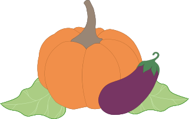
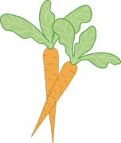

Moestuin Starters
Ons verhaal
Wil jij wat bijdragen aan het milieu en heb je groene vingers? Dan zijn wij er om jou te helpen met je moestuin. Op de onze website hebben we tips & tricks en een stappenplan voor als je voor het eerst een moestuintje begint.
Waarom een moestuin?
Een moestuin heeft veel voordelen. Je groeit je eigen groenten, waardoor je dat niet elke keer van de supermarkt hoeft te halen. Je bespaart er veel geld mee en het is ook nog eens lekker. Het is ook erg milieuvriendelijk. Supermarkten gebruiken veel verpakkingen voor hun groenten en daarbij heb je ook nog eens de transport wat voor veel uitstoot zorgt.